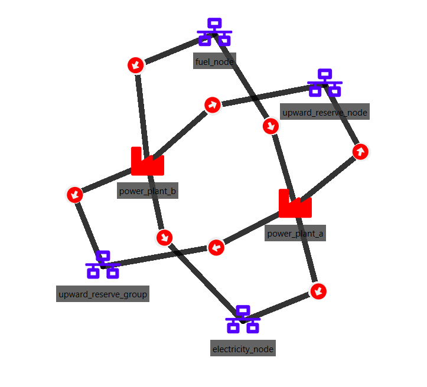
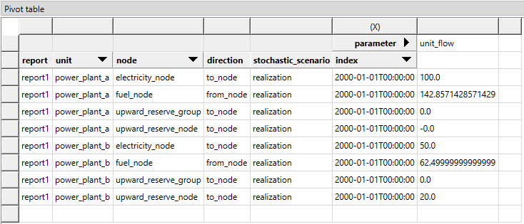
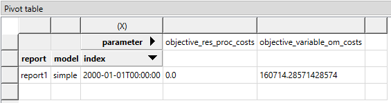

Reserve definition tutorial
This tutorial provides a step-by-step guide to include reserve requirements in a simple energy system with Spine Toolbox for SpineOpt.
Introduction
Welcome to our tutorial, where we will walk you through the process of adding a new reserve node in SpineOpt using Spine Toolbox. To get the most out of this tutorial, we suggest first completing the Simple system tutorial.
Reserves refer to the capacity or energy that is kept as a backup to ensure the power system's reliability. This reserve capacity can be brought online automatically or manually in the event of unforeseen system disruptions such as generation failure, transmission line failure, or a sudden increase in demand. Operating reserves are essential to ensure that there is always enough generation capacity available to meet demand, even in the face of unforeseen system disruptions.
Model assumptions
- The reserve node has a requirement of 20 MW for upward reserve
- Power plants 'a' and 'b' can both provide reserve to this node
- The electricity demand (150 MW) and the power plants are the same as in the Simple system tutorial

Guide
Starting point
You can either continue from your own Simple system project, or start from the example file:
- Create a workflow in Spine Toolbox with an input database, a Run SpineOpt tool and an output database, as on the Verify installation page.
- Double-click the input database to open it in the Spine DB editor.
- Select File > Import... and import the simple system example file.
- Press Commit in the toolbar.
The example file names the nodes electricity_node and fuel_node. If you built the system yourself in the Simple system tutorial, your nodes may be called electricity and fuel; use your own names in the steps below.
In the Parameter value table, the first row is a filter row. Enter new values on the empty row below it.
Adding the reserve node and group
In SpineOpt, a reserve is modelled as a separate node. To link the reserve to electricity production, we also create a node group that contains both the electricity node and the reserve node.
- In the Entity tree (typically on the left), right-click the node class and select Add entities...
- Enter the name
upward_reserve_nodeand press OK. - Right-click the node class again and select Add entity group...
- Enter
upward_reserve_groupas the Group name, addelectricity_nodeandupward_reserve_nodeas members, and press OK.
In SpineOpt, groups of nodes allow the user to create constraints that involve variables from its members. Here, the group upward_reserve_group links the flow variables for electricity production and reserve procurement, so that a unit cannot use the same capacity for both.
Connecting the units to the reserve node and group
Both power plants can provide reserve, so they need a flow to the reserve node and to the group.
- In the Entity tree, right-click the unit__to_node class and select Add entities...
- Add the following four entities (unit first, then the receiving node) and press OK:
| unit | node |
|---|---|
| power_plant_a | upward_reserve_node |
| power_plant_b | upward_reserve_node |
| power_plant_a | upward_reserve_group |
| power_plant_b | upward_reserve_group |
To see the reserve procurement costs in the results, we also add two outputs to the report:
- Right-click the report__output class and select Add entities...
- Add
report1 | variable_om_costsandreport1 | res_proc_costsand press OK.
This will write the total vom_cost and reserve procurement cost terms of the objective function to the output database as part of report1 (see also How to manage Output Data).
Entering the parameter values
Enter the values below in the Parameter value table, always with the alternative Base. For the values marked (list), double-click the value cell and pick the value from the drop-down list. The values marked with * come with the simple system and are already there.
In the Entity tree, select the node class. The Parameter value table should show:
| group | class | entity byname | parameter name | alternative | value |
|---|---|---|---|---|---|
| node | electricity_node | demand | Base | 150.0 * | |
| node | fuel_node | balance_type | Base | none * | |
| node | upward_reserve_group | balance_type | Base | none (list) | |
| node | upward_reserve_node | balance_sense | Base | >= (list) | |
| node | upward_reserve_node | demand | Base | 20.0 | |
| node | upward_reserve_node | reserve_active | Base | True (list) | |
| node | upward_reserve_node | reserve_upward | Base | True (list) |
In the Entity tree, select the unit__to_node class. The Parameter value table should show:
| group | class | entity byname | parameter name | alternative | value |
|---|---|---|---|---|---|
| unit__to_node | power_plant_a ǀ electricity_node | capacity_per_unit | Base | 100.0 * | |
| unit__to_node | power_plant_a ǀ upward_reserve_group | capacity_per_unit | Base | 100.0 | |
| unit__to_node | power_plant_a ǀ upward_reserve_node | capacity_per_unit | Base | 100.0 | |
| unit__to_node | power_plant_b ǀ electricity_node | capacity_per_unit | Base | 200.0 * | |
| unit__to_node | power_plant_b ǀ upward_reserve_group | capacity_per_unit | Base | 200.0 | |
| unit__to_node | power_plant_b ǀ upward_reserve_node | capacity_per_unit | Base | 200.0 |
What the values do:
- demand sets the reserve requirement of 20 MW.
- reserve_active makes the node a reserve node, and reserve_upward sets the direction of the reserve.
- balance_sense
>=means that the procured reserve must be greater than or equal to the reserve demand. - balance_type
noneon the group means that no extra balance is created between the members of the group. - capacity_per_unit on the reserve node sets how much reserve each unit can provide. Here it is equal to the unit capacity for the electricity node, but it can be lower if the unit cannot provide reserves with its total capacity.
- capacity_per_unit on the group sets the total capacity of each unit for electricity and reserve together.
All nine new values are needed. If some of them are missing, the model can become infeasible or give unexpected results.
Press Commit in the toolbar when you are done.
Executing the workflow
Go back to Spine Toolbox's main window and press the Project button in the Execute section of the toolbar. Select the Run SpineOpt tool to follow the output of SpineOpt in the console.
Examining the results
- Double-click the output database to open it in the Spine DB editor.
- Press Index in the toolbar to switch to the pivot table view.
- Select
report__unit__node__direction__stochastic_scenarioin the Entity tree. - In the Frozen table, select the alternative of the latest run. By default the Frozen table shows the oldest run, and every run adds a new "Run SpineOpt@..." alternative.
You should see the following unit_flow values:
| unit | node | unit_flow |
|---|---|---|
| power_plant_a | electricity_node | 100.0 |
| power_plant_a | upward_reserve_node | 0.0 |
| power_plant_b | electricity_node | 50.0 |
| power_plant_b | upward_reserve_node | 20.0 |

As anticipated, power_plant_b is supplying the necessary reserve due to its surplus capacity, while power_plant_a is operating at full capacity. Additionally, in this model, we have not allocated a cost for reserve procurement. To check this, select report__model in the Entity tree: objective_res_proc_costs is 0.0 and objective_variable_om_costs is 160714.29.

So, is it possible to assign costs to this reserve procurement in SpineOpt? Yes, it is indeed possible.
Adding a reserve procurement cost
Open the input database again and add the following values (alternative Base):
In the Entity tree, expand unit__to_node and select the two entities below. The Parameter value table should show:
| group | class | entity byname | parameter name | alternative | value |
|---|---|---|---|---|---|
| unit__to_node | power_plant_a ǀ upward_reserve_node | reserve_procurement_cost | Base | 5.0 | |
| unit__to_node | power_plant_b ǀ upward_reserve_node | reserve_procurement_cost | Base | 35.0 |
Press Commit, go back to Spine Toolbox's main window and press Project again.
Examining the results again
View the results as before, and remember to select the latest run in the Frozen table. You should now see:
| unit | node | unit_flow |
|---|---|---|
| power_plant_a | electricity_node | 80.0 |
| power_plant_a | upward_reserve_node | 20.0 |
| power_plant_b |